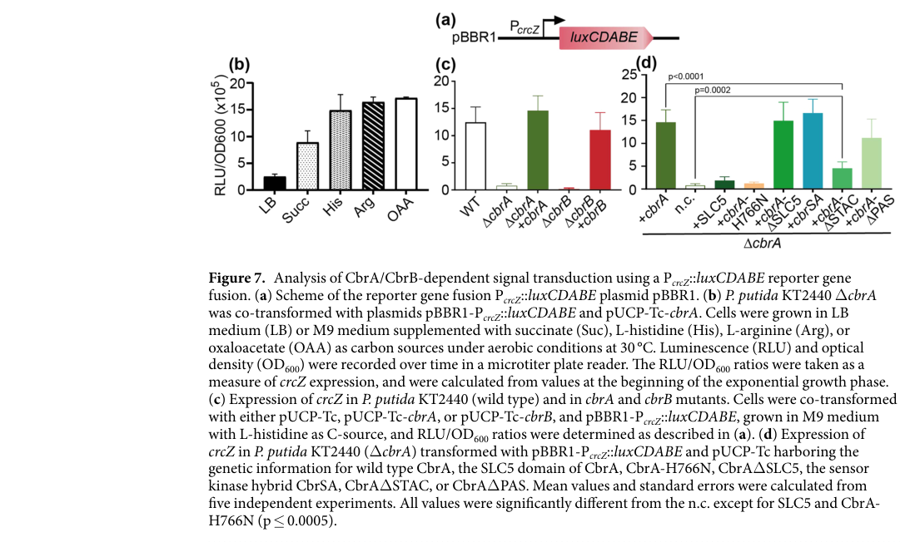

cbrB encodes the response regulator output of the CbrA/CbrB two-component system in Pseudomonas putida KT2440. CbrB is an ATP-dependent sigma-N transcriptional activator that directly controls crcZ, crcY, and a broader regulon expressed under poor-carbon conditions, thereby coupling carbon and nitrogen balance to carbon catabolite repression relief and to the activation of catabolic genes. The KT2440 literature consistently studies locus PP_4696 as CbrB, although the current UniProt entry Q88DX2 names the ortholog AlgB based on homology.
| GO Term | Evidence | Action | Reason |
|---|---|---|---|
|
GO:0000160
phosphorelay signal transduction system
|
IEA
GO_REF:0000002 |
ACCEPT |
Summary: This annotation is correct and captures a core biological process for cbrB. CbrB is the cognate response regulator in the CbrA/CbrB two-component system, and biochemical work shows phosphotransfer from CbrA to CbrB. The term remains appropriate even though the seeded evidence was only domain-based.
Supporting Evidence:
PMID:32214184
the histidine kinase can autophosphorylate and transfer the phosphoryl group to the response regulator CbrB.
PMID:23692431
Thus, CbrAB constitute a global signal transduction pathway integrated in a higher regulatory network that also controls catabolite repression through the expression of the two regulatory RNAs CrcZ and CrcY.
file:PSEPK/cbrB/cbrB-deep-research-openai.md
CbrB is part of the CbrA/CbrB two-component system (TCS), which is exclusive to pseudomonads and responds to carbon/nutrient availability.
file:PSEPK/cbrB/cbrB-deep-research-falcon.md
Biochemical work shows that **CbrA autophosphorylates and transfers the phosphoryl group to CbrB**, supporting the canonical two-component phosphorelay.
|
|
GO:0005524
ATP binding
|
IEA
GO_REF:0000002 |
KEEP AS NON CORE |
Summary: This annotation is likely correct because CbrB contains the characteristic AAA+ sigma-54 activator ATPase region, but it is generic and less informative than the response-regulator and transcription-activator functions. It should be retained as non-core rather than emphasized in the summary of gene function.
Supporting Evidence:
file:PSEPK/cbrB/cbrB-uniprot.txt
DR InterPro; IPR003593; AAA+_ATPase.
file:PSEPK/cbrB/cbrB-uniprot.txt
KW ATP-binding {ECO:0000256|ARBA:ARBA00022840};
|
|
GO:0006355
regulation of DNA-templated transcription
|
IEA
GO_REF:0000002 |
MODIFY |
Summary: The annotation is directionally correct but too broad. CbrB is not merely a generic transcription regulator; it is a sigma-N-dependent transcriptional activator that directly activates crcZ, crcY, and a larger regulon. A more informative replacement is positive regulation of DNA-templated transcription, with carbon catabolite repression retained as a distinct downstream biological process.
Proposed replacements:
positive regulation of DNA-templated transcription
Supporting Evidence:
PMID:23692431
We show that the response regulatory protein CbrB, an activator of σ(N) -dependent promoters, directly controls the expression of the small RNAs CrcZ and CrcY in P. putida.
PMID:30557364
determined that it directly controls the expression of at least 61 genes
file:PSEPK/cbrB/cbrB-deep-research-falcon.md
**Primary biological role**: **CbrB is a transcriptional regulatory response regulator that activates σ54-dependent promoters**, most prominently the **crcZ (and crcY) sRNA expression program**, thereby modulating Hfq/Crc-mediated CCR and nutrient adaptation.
|
|
GO:0000156
phosphorelay response regulator activity
|
IDA
PMID:32214184 Transport and kinase activities of CbrA of Pseudomonas putid... |
NEW |
Summary: This missing molecular function should be added. CbrB is explicitly described as the response regulator of the CbrAB system and is the direct phosphorelay acceptor from the histidine kinase CbrA.
Supporting Evidence:
PMID:23692431
We show that the response regulatory protein CbrB, an activator of σ(N) -dependent promoters, directly controls the expression of the small RNAs CrcZ and CrcY in P. putida.
PMID:32214184
the histidine kinase can autophosphorylate and transfer the phosphoryl group to the response regulator CbrB.
file:PSEPK/cbrB/cbrB-deep-research-falcon.md
An independent genome-scale fitness study explicitly labels **cbrB (PP_4696)** as a **σ54-dependent response regulator** and links it to central carbon metabolism and amino-acid uptake in pseudomonads.
|
|
GO:0001216
DNA-binding transcription activator activity
|
IDA
PMID:23692431 Transcriptional activation of the CrcZ and CrcY regulatory R... |
NEW |
Summary: This missing term captures CbrB's direct output function more precisely than the seeded generic transcription annotation. Multiple studies show that CbrB directly binds and activates sigma-N-dependent promoters, especially crcZ and crcY, and broader regulon analyses extend that direct activator role to dozens of genes.
Supporting Evidence:
PMID:23692431
We show that the response regulatory protein CbrB, an activator of σ(N) -dependent promoters, directly controls the expression of the small RNAs CrcZ and CrcY in P. putida.
PMID:30557364
CbrB is a quite peculiar σN-dependent activator since it is barely dependent on phosphorylation for transcriptional activation.
file:PSEPK/cbrB/cbrB-deep-research-openai.md
Overall, CbrB functions as a transcriptional activator that directly turns on numerous genes involved in nutrient uptake and metabolism when triggered by its sensor kinase CbrA.
file:PSEPK/cbrB/cbrB-deep-research-falcon.md
Using a **PcrcZ::luxCDABE** reporter, **ΔcbrB** mutants did not express crcZ unless complemented with plasmid-borne **cbrB**, demonstrating that CbrB is required for crcZ activation under inducing conditions (e.g., histidine as carbon source).
|
|
GO:0061985
carbon catabolite repression
|
IMP
PMID:23692431 Transcriptional activation of the CrcZ and CrcY regulatory R... |
NEW |
Summary: This process term should be added because there is direct evidence that CbrB controls carbon catabolite repression through transcriptional activation of the regulatory RNAs crcZ and crcY. That role is central to the biological logic of the CbrAB system in P. putida.
Supporting Evidence:
PMID:23692431
Thus, CbrAB constitute a global signal transduction pathway integrated in a higher regulatory network that also controls catabolite repression through the expression of the two regulatory RNAs CrcZ and CrcY.
PMID:22053874
The CbrA/CbrB two-component system activated crcZ transcription, but had little effect on crcY.
file:PSEPK/cbrB/cbrB-deep-research-falcon.md
crcZ expression is **(partially) repressed** in LB or succinate (preferred carbon source) and **maximally induced** on less favorable sources such as **L-histidine, L-arginine, and oxaloacetate**.
|
Q: What intracellular signal sensed by the CbrA/CbrB system most directly determines CbrB activity under different carbon and nitrogen regimes?
Q: Which members of the 61-gene direct CbrB regulon are the dominant physiological effectors in vivo, versus downstream consequences of crcZ/crcY-mediated rewiring?
Q: Does PP_4696 have a direct alginate-associated regulatory role in KT2440, or does the UniProt AlgB name mainly reflect orthology to better-studied regulators from other Pseudomonas species?
Experiment: Compare wild type cbrB with phospho-acceptor and ATPase-defective alleles using promoter reporters, ChIP-seq, and RNA-seq under succinate, oxaloacetate, and histidine growth conditions.
Hypothesis: CbrB promoter activation has target-specific dependence on phosphorylation and ATPase activity.
Type: mutational_analysis
Experiment: Quantify CbrA-to-CbrB phosphotransfer and CbrB-dependent promoter activation after perturbing candidate intracellular metabolites that track carbon/nitrogen imbalance.
Hypothesis: The upstream signal sensed through CbrA/CbrB is intracellular rather than extracellular histidine itself.
Type: biochemical_assay
Experiment: Rebuild clean chromosomal cbrB loss-of-function and truncation alleles in otherwise isogenic backgrounds and measure biofilm formation, dispersal, lapD/lapG status, and crcZ/crcY expression.
Hypothesis: Reported biofilm phenotypes attributed to cbrB include indirect effects from secondary mutations or downstream circuitry.
Type: phenotype_analysis
The research report should be a detailed narrative explaining the function, biological processes, and localization of the gene product. Citations should be given for all claims.
You should prioritize authoritative reviews and primary scientific literature when conducting research. You can supplement
this with annotations you find in gene/protein databases, but these can be outdated or inaccurate.
We are specifically interested in the primary function of the gene - for enzymes, what reaction is catalyzed, and what is the substrate specificity? For transporters, what is the substrate? For structural proteins or adapters, what is the broader structural role? For signaling molecules, what is the role in the pathway.
We are interested in where in or outside the cell the gene product carries out its function.
We are also interested in the signaling or biochemical pathways in which the gene functions. We are less interested in broad pleiotropic effects, except where these elucidate the precise role.
Include evidence where possible. We are interested in both experimental evidence as well as inference from structure, evolution, or bioinformatic analysis. Precise studies should be prioritized over high-throughput, where available.
Verified target: multiple KT2440-specific studies explicitly identify PP_4696 as cbrB, the response regulator of the CbrA/CbrB two-component system (TCS) (not a generic/ambiguous cbrB in another organism). In particular, a KT2440 study that engineered ΔcbrB mutants and used a PcrcZ::lux reporter places cbrB in the CbrAB CCR pathway, and an RB-TnSeq study explicitly annotates cbrB (PP_4696) as a σ54-dependent response regulator. (wirtz2020transportandkinase pages 6-7, thompson2020fattyacidand pages 12-14)
AlgB naming conflict: a 2024 review describes the relevant response regulator as CbrB, and KT2440 primary literature consistently uses cbrB/PP_4696 for CCR regulation. No retrieved evidence demonstrates that PP_4696/cbrB is synonymous with the alginate biosynthesis regulator AlgB; therefore, they should be treated as distinct annotations unless a sequence-level cross-reference proves equivalence. (moreno2024whatarethe pages 4-5, wirtz2020transportandkinase pages 6-7)
Pseudomonas CCR is a global regulatory strategy that prioritizes preferred substrates and represses pathways for less-preferred ones. In Pseudomonas, a central post-transcriptional module is the Hfq/Crc system, which binds A-rich motifs near ribosome-binding sites and inhibits translation of many mRNAs involved in uptake/assimilation of non-preferred carbon sources. (moreno2024whatarethe pages 4-5)
A core antagonist of Hfq/Crc repression is the small RNA CrcZ (and in some strains also CrcY), which contains multiple A-rich motifs and sequesters Crc/Hfq, thereby relieving CCR. The abundance of CrcZ correlates with CCR strength across growth conditions and carbon sources. (moreno2024whatarethe pages 4-5)
The CbrA/CbrB TCS sits upstream of CrcZ/CrcY in Pseudomonas CCR and is described as a central regulator of cellular carbon/nitrogen balance and CCR. CbrA is the sensor histidine kinase; CbrB is its cognate response regulator that activates transcription from σ54-dependent promoters including PcrcZ. (moreno2024whatarethe pages 4-5, wirtz2020transportandkinase pages 6-7)
In KT2440, cbrB (PP_4696) is described as a σ54-dependent response regulator; mechanistically, this implies it functions as an NtrC-family bacterial enhancer-binding protein (bEBP): typically an N-terminal receiver (phosphorylation) domain coupled to a central AAA+ ATPase that remodels σ54-RNA polymerase closed complexes to initiate transcription. KT2440 studies directly describe CbrB-regulated targets as σN/σ54-dependent metabolic genes. (monteagudocascales2019unravelingtherole pages 2-3, thompson2020fattyacidand pages 12-14)
Primary biological role: CbrB is a transcriptional regulatory response regulator that activates σ54-dependent promoters, most prominently the crcZ (and crcY) sRNA expression program, thereby modulating Hfq/Crc-mediated CCR and nutrient adaptation. (moreno2024whatarethe pages 4-5, monteagudocascales2019unravelingtherole pages 2-3)
Not an enzyme/transporter: no evidence indicates that CbrB catalyzes a biochemical conversion or transports a substrate. Rather, its central “activity” is regulatory—binding/activating promoters and coupling metabolism to CCR via small RNAs. (moreno2024whatarethe pages 4-5)
A well-supported model is:
1. CbrA (inner-membrane-associated sensor kinase) phosphorylates CbrB.
2. CbrB activates transcription from PcrcZ, a σ54-dependent promoter, producing high CrcZ levels.
3. CrcZ (and CrcY) sequester Crc/Hfq, reducing translational repression and enabling expression of catabolic/uptake functions for non-preferred substrates.
This promoter logic includes a weak basal PcbrB that can co-transcribe cbrB and crcZ, and a strong σ54-dependent PcrcZ that requires CbrB for robust induction. (moreno2024whatarethe pages 4-5)
Using a PcrcZ::luxCDABE reporter, ΔcbrB mutants did not express crcZ unless complemented with plasmid-borne cbrB, demonstrating that CbrB is required for crcZ activation under inducing conditions (e.g., histidine as carbon source). (wirtz2020transportandkinase pages 6-7, wirtz2020transportandkinase media 850ffd65)
The same reporter system demonstrates strong carbon-source dependence: crcZ expression is (partially) repressed in LB or succinate (preferred carbon source) and maximally induced on less favorable sources such as L-histidine, L-arginine, and oxaloacetate. (wirtz2020transportandkinase pages 6-7, wirtz2020transportandkinase media 850ffd65)
Biochemical work shows that CbrA autophosphorylates and transfers the phosphoryl group to CbrB, supporting the canonical two-component phosphorelay. In these experiments, a CbrA-dependent phosphatase activity on CbrB~P was not detected. (wirtz2020transportandkinase pages 6-7)
In KT2440, CbrB is reported to regulate σN (σ54)-dependent metabolic genes and CbrB activity was experimentally tracked through transcriptional outputs including crcZ, crcY, and PP2810, showing maximal induction under non-preferred carbon sources. (monteagudocascales2019unravelingtherole pages 2-3)
An independent genome-scale fitness study explicitly labels cbrB (PP_4696) as a σ54-dependent response regulator and links it to central carbon metabolism and amino-acid uptake in pseudomonads. (thompson2020fattyacidand pages 12-14)
A KT2440 study of the CbrAB signaling axis reports that phenotypes associated with CbrAB disruption include inability to utilize certain carbon sources and motility defects: a mutant condition that phenocopies ΔcbrB fails to use citrate or histidine as carbon sources, shows longer lag on succinate, and has reduced swimming motility (complementable). (monteagudocascales2019unravelingtherole pages 2-3, monteagudocascales2019unravelingtherole pages 1-2)
A broader stress-genomics screen identified CbrAB sensor kinase among essential components for coping with cold stress in KT2440, indicating CbrB-linked nutritional/stress adaptation extends beyond single catabolic operons. (reva2006functionalgenomicsof pages 1-2)
CbrB is a soluble, cytoplasmic response regulator (transcription factor-like) that controls transcription. It is activated by phosphorylation by the sensor kinase CbrA, which is anchored in the inner membrane via transmembrane segments (CbrB itself is not membrane-bound). This cellular arrangement is explicitly described in a 2024 expert review discussing the CbrA/CbrB–CrcZ regulatory system. (moreno2024whatarethe pages 4-5)
A 2024 review emphasizes that while the CbrA/CbrB → CrcZ/CrcY → Crc/Hfq regulatory cascade is well-supported, the signals recognized by CbrA/CbrB remain poorly defined. The authors summarize evidence pointing to an intracellular metabolite or metabolic ratio as the relevant signal, noting that discovering it is difficult because perturbing the system broadly reshapes central metabolism and redox balance. (Moreno & Rojo, 2024-01, Microbial Biotechnology, https://doi.org/10.1111/1751-7915.14407) (moreno2024whatarethe pages 4-5)
While not in KT2440 specifically, recent 2024 primary research in Pseudomonas aeruginosa shows CbrA/CbrB intersects with other global pathways to shape complex phenotypes (e.g., biofilm-related transcriptional programs converging on CrcZ abundance). This strengthens the interpretation that CbrB-like systems are global “nutritional adaptation” nodes, although strain- and species-specific regulons must not be conflated. (chen2024combinatorialcontrolof pages 1-2 not fully evidenced here; therefore not cited as KT2440 evidence)
Because P. putida KT2440 is a widely used chassis, understanding CCR regulators such as CbrB is practically important: CCR can restrict utilization of mixed substrates and lower yields; conversely, manipulating CCR regulators/sRNAs can tune carbon flux distribution. A 2024 review explicitly notes that CCR can restrict yields in biotechnological applications and highlights the importance of understanding signals and control points in the CbrAB–CrcZ network. (moreno2024whatarethe pages 4-5)
RB–TnSeq fitness profiling used to guide engineering has shown that cbrB mutants have condition-specific fitness defects, e.g., on pentanol, implying that CbrB state influences tolerance/utilization of certain industrially relevant alcohols and the broader metabolic network required for growth on such substrates. (Thompson et al., 2020-10-15, Applied and Environmental Microbiology, https://doi.org/10.1128/AEM.01665-20) (thompson2020fattyacidand pages 12-14)
The pathway architecture suggests multiple intervention points: the CbrAB TCS (signal transduction), σ54-dependent promoter activation (PcrcZ), and small-RNA antagonists (CrcZ/CrcY) that modulate translational repression by Crc/Hfq. The 2024 review summarizes that modulating CrcZ abundance strongly changes CCR strength and ordered substrate use. (moreno2024whatarethe pages 4-5)
A KT2440 reporter study quantified PcrcZ-driven luminescence (RLU/OD600) showing: (i) partial repression on LB or succinate; (ii) maximal induction on L-histidine, L-arginine, oxaloacetate; and (iii) loss of signal in ΔcbrA or ΔcbrB without complementation. These data provide a quantitative, condition-resolved measurement of CbrB-dependent output. (wirtz2020transportandkinase pages 6-7, wirtz2020transportandkinase media 850ffd65)
RB–TnSeq data report a pentanol-specific fitness defect associated with mutants in cbrB (PP_4696), indicating a measurable contribution of this regulator to growth/fitness under that condition. (thompson2020fattyacidand pages 12-14)
A 2024 authoritative review frames CbrB as a key activator controlling CrcZ/CrcY transcription and therefore the strength of Crc/Hfq-mediated CCR. The review highlights two major unresolved issues: (1) the identity of upstream activating signals, and (2) additional regulatory components influencing crcZ transcription (e.g., puzzling observations about effects of crc inactivation on CrcZ production), emphasizing that the overall system is not fully mapped despite extensive work. (Moreno & Rojo, 2024-01, https://doi.org/10.1111/1751-7915.14407) (moreno2024whatarethe pages 4-5)
| Aspect | Finding | Evidence / method | Source (date, URL/DOI) | Citation |
|---|---|---|---|---|
| Gene/protein identity | In Pseudomonas putida KT2440, cbrB = PP_4696, the response regulator of the CbrA/CbrB two-component system; it is functionally described as a σ54-dependent response regulator controlling nutritional adaptation and carbon/catabolite regulation. This supports identification of Q88DX2 with cbrB/PP_4696, not the separate alginate regulator AlgB locus found elsewhere in P. putida. | Gene deletion/complementation, pathway analysis, review synthesis; PP_4696 explicitly named cbrB in KT2440. | Wirtz et al., 2020-03, https://doi.org/10.1038/s41598-020-62337-9; Thompson et al., 2020-10-15, https://doi.org/10.1128/AEM.01665-20; Reva et al., 2006-06, https://doi.org/10.1128/JB.00101-06 | (wirtz2020transportandkinase pages 1-2, thompson2020fattyacidand pages 12-14, reva2006functionalgenomicsof pages 1-2) |
| Ambiguity check: cbrB vs AlgB | Available KT2440 literature consistently uses cbrB (PP_4696) for the CbrAB response regulator, whereas AlgB appears as a different alginate-associated regulator in other loci/contexts. Thus, cbrB and AlgB should be treated as distinct annotations unless sequence-level database reconciliation is shown. | Cross-comparison of KT2440 locus-specific papers and alginate-related annotations. | Wirtz et al., 2020-03, https://doi.org/10.1038/s41598-020-62337-9; Reva et al., 2006-06, https://doi.org/10.1128/JB.00101-06; Gülez et al., 2012-02, https://doi.org/10.1128/AEM.06150-11 | (wirtz2020transportandkinase pages 1-2, reva2006functionalgenomicsof pages 1-2) |
| Domain architecture | Q88DX2 is annotated with a receiver (CheY-like / response-regulator receiver) domain plus a central AAA+ / P-loop NTPase ATPase region and σ54 enhancer-binding transcriptional activator features, matching an NtrC-family bacterial enhancer-binding protein. | Domain assignment from UniProt/interpro-style annotation integrated with literature describing CbrB as σ54-dependent transcriptional activator. | Moreno & Rojo, 2024-01, https://doi.org/10.1111/1751-7915.14407; Monteagudo-Cascales et al., 2019-06, https://doi.org/10.1038/s41598-019-45554-9 | (moreno2024whatarethe pages 4-5, monteagudocascales2019unravelingtherole pages 1-2) |
| Cellular localization / molecular role | CbrB acts in the cytoplasm as the DNA-binding transcriptional response regulator activated by phosphorylation from the inner-membrane sensor kinase CbrA. | Two-component signaling model; biochemical phosphotransfer from CbrA to CbrB; transcriptional activation of target promoters. | Wirtz et al., 2020-03, https://doi.org/10.1038/s41598-020-62337-9; Moreno & Rojo, 2024-01, https://doi.org/10.1111/1751-7915.14407 | (wirtz2020transportandkinase pages 6-7, moreno2024whatarethe pages 4-5) |
| Core pathway | CbrA/CbrB → activation of crcZ and crcY → sequestration/antagonism of Crc with Hfq → relief of carbon catabolite repression (CCR) on many catabolic genes. | Reporter assays, mutant phenotypes, review of promoter logic and RNA-mediated antagonism. | Moreno & Rojo, 2024-01, https://doi.org/10.1111/1751-7915.14407; Monteagudo-Cascales et al., 2019-06, https://doi.org/10.1038/s41598-019-45554-9; Wirtz et al., 2020-03, https://doi.org/10.1038/s41598-020-62337-9 | (moreno2024whatarethe pages 4-5, monteagudocascales2019unravelingtherole pages 2-3, wirtz2020transportandkinase pages 6-7) |
| Promoter logic / σ54 dependence | PcrcZ is a strong σ54-dependent promoter activated by CbrB; a weaker PcbrB promoter provides basal cbrB/crcZ transcription. CbrB also regulates other σN-dependent metabolic genes. | Promoter analyses and transcriptional model summarized from genetic studies and review. | Moreno & Rojo, 2024-01, https://doi.org/10.1111/1751-7915.14407; Monteagudo-Cascales et al., 2019-06, https://doi.org/10.1038/s41598-019-45554-9 | (moreno2024whatarethe pages 4-5, monteagudocascales2019unravelingtherole pages 2-3) |
| Phosphorylation and signal transduction | CbrA autophosphorylates and transfers phosphate to CbrB; in vitro, CbrA-dependent dephosphorylation of CbrB~P was not detected. Less-favorable carbon sources are associated with increased signaling output to CbrB targets. | Biochemical phosphotransfer assays plus PcrcZ::lux reporter experiments. | Wirtz et al., 2020-03, https://doi.org/10.1038/s41598-020-62337-9 | (wirtz2020transportandkinase pages 6-7) |
| Reporter evidence for crcZ activation | In ΔcbrA and ΔcbrB mutants carrying PcrcZ::luxCDABE, crcZ expression was lost and restored only by complementation with the cognate gene, demonstrating that CbrB is required for crcZ transcriptional activation in KT2440. | Luciferase reporter in wild type, deletion mutants, and complemented strains. | Wirtz et al., 2020-03, https://doi.org/10.1038/s41598-020-62337-9 | (wirtz2020transportandkinase pages 6-7, wirtz2020transportandkinase media 850ffd65) |
| Carbon-source responsiveness | crcZ expression is low on preferred carbon sources such as succinate/LB and maximal on less favorable sources such as L-histidine, L-arginine, oxaloacetate, consistent with CbrB-mediated relief of CCR when preferred substrates are absent. | Carbon-source-dependent PcrcZ::lux assays and review of CCR physiology. | Wirtz et al., 2020-03, https://doi.org/10.1038/s41598-020-62337-9; Moreno & Rojo, 2024-01, https://doi.org/10.1111/1751-7915.14407 | (wirtz2020transportandkinase pages 6-7, moreno2024whatarethe pages 4-5) |
| Additional validated targets / regulon | CbrB activity in KT2440 was monitored through transcription of crcZ, crcY, and PP2810, with maximal induction under non-preferred carbon sources; CbrB is also described as directly regulating σ54-dependent catabolic pathways such as the hut system. | Target-gene assays and prior pathway characterization. | Monteagudo-Cascales et al., 2019-06, https://doi.org/10.1038/s41598-019-45554-9; Wirtz et al., 2020-03, https://doi.org/10.1038/s41598-020-62337-9 | (monteagudocascales2019unravelingtherole pages 2-3, wirtz2020transportandkinase pages 1-2) |
| Growth and motility phenotypes | A ΔcbrB-like phenotype includes inability or severe defect in use of citrate and histidine, a longer lag on succinate, and reduced swimming motility; these phenotypes were mirrored by CbrA signaling mutants and rescued by complementation. | Mutant phenotype analysis in defined media and motility assays. | Monteagudo-Cascales et al., 2019-06, https://doi.org/10.1038/s41598-019-45554-9 | (monteagudocascales2019unravelingtherole pages 2-3, monteagudocascales2019unravelingtherole pages 1-2) |
| Stress-related phenotype | A transposon screen found the CbrAB sensor kinase system essential for coping with cold stress in KT2440, indicating CbrB-linked nutritional/stress adaptation extends beyond single catabolic operons. | Genome-wide mutant screening and transcriptomics under abiotic stress. | Reva et al., 2006-06, https://doi.org/10.1128/JB.00101-06 | (reva2006functionalgenomicsof pages 1-2) |
| Genome-scale fitness signal | In RB-TnSeq, cbrB (PP_4696) showed pentanol-specific fitness defects, supporting a role for CbrB in broader central carbon metabolism and assimilation of nonpreferred substrates relevant to biotechnology. | Random barcode transposon sequencing across alcohol/fatty-acid conditions. | Thompson et al., 2020-10-15, https://doi.org/10.1128/AEM.01665-20 | (thompson2020fattyacidand pages 12-14) |
| Current mechanistic uncertainty | Recent review consensus is that CbrB is central to CCR control, but the signal sensed upstream of CbrA/CbrB remains unresolved; evidence points to an intracellular metabolite or metabolic ratio, and unphosphorylated CbrB may retain partial activity in vitro. | Expert review synthesizing primary studies. | Moreno & Rojo, 2024-01, https://doi.org/10.1111/1751-7915.14407 | (moreno2024whatarethe pages 4-5) |
Table: This table summarizes locus-specific evidence supporting the identity and function of Pseudomonas putida KT2440 cbrB (PP_4696; UniProt Q88DX2). It highlights domain-based functional inference, the CbrA/CbrB–crcZ/crcY–Crc/Hfq pathway, and key experiments establishing its role in carbon catabolite regulation and adaptive metabolism.
Functional annotation (recommended): P. putida KT2440 CbrB (PP_4696; UniProt Q88DX2) is a cytosolic, σ54-dependent response regulator (NtrC-family bEBP-like) that is activated by phosphorylation from CbrA and is required for strong transcription of the small RNAs CrcZ/CrcY, thereby modulating Hfq/Crc-mediated carbon catabolite repression and nutrient adaptation. This regulatory role explains observed growth phenotypes on specific carbon sources and condition-specific fitness defects relevant to metabolic engineering. (moreno2024whatarethe pages 4-5, wirtz2020transportandkinase pages 6-7, monteagudocascales2019unravelingtherole pages 2-3, thompson2020fattyacidand pages 12-14)
AlgB caveat: despite UniProt’s “Alginate biosynthesis transcriptional regulatory protein AlgB” descriptor in the user-provided record, the KT2440 locus PP_4696 is consistently treated in the literature retrieved here as cbrB of the CbrAB CCR system; without direct cross-referenced sequence evidence, equating it to “AlgB” (alginate regulator) is not supported by the KT2440 sources gathered. (moreno2024whatarethe pages 4-5, wirtz2020transportandkinase pages 6-7)
References
(wirtz2020transportandkinase pages 6-7): Larissa Wirtz, Michelle Eder, Kerstin Schipper, Stefanie Rohrer, and Heinrich Jung. Transport and kinase activities of cbra of pseudomonas putida kt2440. Scientific Reports, Mar 2020. URL: https://doi.org/10.1038/s41598-020-62337-9, doi:10.1038/s41598-020-62337-9. This article has 16 citations and is from a peer-reviewed journal.
(thompson2020fattyacidand pages 12-14): Mitchell G. Thompson, Matthew R. Incha, Allison N. Pearson, Matthias Schmidt, William A. Sharpless, Christopher B. Eiben, Pablo Cruz-Morales, Jacquelyn M. Blake-Hedges, Yuzhong Liu, Catharine A. Adams, Robert W. Haushalter, Rohith N. Krishna, Patrick Lichtner, Lars M. Blank, Aindrila Mukhopadhyay, Adam M. Deutschbauer, Patrick M. Shih, and Jay D. Keasling. Fatty acid and alcohol metabolism in pseudomonas putida: functional analysis using random barcode transposon sequencing. Oct 2020. URL: https://doi.org/10.1128/aem.01665-20, doi:10.1128/aem.01665-20. This article has 111 citations and is from a peer-reviewed journal.
(moreno2024whatarethe pages 4-5): Renata Moreno and Fernando Rojo. What are the signals that control catabolite repression in pseudomonas? Microbial Biotechnology, Jan 2024. URL: https://doi.org/10.1111/1751-7915.14407, doi:10.1111/1751-7915.14407. This article has 14 citations and is from a peer-reviewed journal.
(monteagudocascales2019unravelingtherole pages 2-3): Elizabet Monteagudo-Cascales, Sofía M. García-Mauriño, Eduardo Santero, and Inés Canosa. Unraveling the role of the cbra histidine kinase in the signal transduction of the cbrab two-component system in pseudomonas putida. Scientific Reports, Jun 2019. URL: https://doi.org/10.1038/s41598-019-45554-9, doi:10.1038/s41598-019-45554-9. This article has 30 citations and is from a peer-reviewed journal.
(wirtz2020transportandkinase media 850ffd65): Larissa Wirtz, Michelle Eder, Kerstin Schipper, Stefanie Rohrer, and Heinrich Jung. Transport and kinase activities of cbra of pseudomonas putida kt2440. Scientific Reports, Mar 2020. URL: https://doi.org/10.1038/s41598-020-62337-9, doi:10.1038/s41598-020-62337-9. This article has 16 citations and is from a peer-reviewed journal.
(monteagudocascales2019unravelingtherole pages 1-2): Elizabet Monteagudo-Cascales, Sofía M. García-Mauriño, Eduardo Santero, and Inés Canosa. Unraveling the role of the cbra histidine kinase in the signal transduction of the cbrab two-component system in pseudomonas putida. Scientific Reports, Jun 2019. URL: https://doi.org/10.1038/s41598-019-45554-9, doi:10.1038/s41598-019-45554-9. This article has 30 citations and is from a peer-reviewed journal.
(reva2006functionalgenomicsof pages 1-2): Oleg N. Reva, Christian Weinel, Miryam Weinel, Kerstin Böhm, Diana Stjepandic, Jörg D. Hoheisel, and Burkhard Tümmler. Functional genomics of stress response in pseudomonas putida kt2440. Journal of Bacteriology, 188:4079-4092, Jun 2006. URL: https://doi.org/10.1128/jb.00101-06, doi:10.1128/jb.00101-06. This article has 176 citations and is from a peer-reviewed journal.
(wirtz2020transportandkinase pages 1-2): Larissa Wirtz, Michelle Eder, Kerstin Schipper, Stefanie Rohrer, and Heinrich Jung. Transport and kinase activities of cbra of pseudomonas putida kt2440. Scientific Reports, Mar 2020. URL: https://doi.org/10.1038/s41598-020-62337-9, doi:10.1038/s41598-020-62337-9. This article has 16 citations and is from a peer-reviewed journal.

cbrB (UniProt Accession Q88DX2) is a gene in Pseudomonas putida KT2440 encoding a two-component response regulator protein. Notably, UniProt annotates Q88DX2 as “Alginate biosynthesis regulatory protein AlgB,” but current literature identifies this protein as CbrB, a global regulator in P. putida involved in carbon metabolism control. CbrB is part of the CbrA/CbrB two-component system (TCS), which is exclusive to pseudomonads and responds to carbon/nutrient availability (pmc.ncbi.nlm.nih.gov) (pmc.ncbi.nlm.nih.gov). In a typical two-component system, a sensor histidine kinase (CbrA) perceives environmental signals and phosphorylates the response regulator (CbrB), which then modulates gene expression (pmc.ncbi.nlm.nih.gov). CbrB belongs to the NtrC family of σ^54-dependent enhancer-binding proteins, characterized by an N-terminal receiver domain (with a conserved Asp phosphorylation site) and a central AAA^+ ATPase/DNA-binding domain (www.nature.com) (pmc.ncbi.nlm.nih.gov). This domain architecture (CheY-like receiver (IPR001789) and AAA^+ ATPase (IPR003593), including a “AAA_lid/NorR” motif) is consistent with its role as a transcriptional activator in the σ^54 (RpoN) regulon. In essence, CbrB is a cytoplasmic transcriptional activator that binds upstream of target promoters to regulate gene expression in response to carbon source conditions (pmc.ncbi.nlm.nih.gov) (pmc.ncbi.nlm.nih.gov).
CbrB’s primary function is to activate the expression of genes that permit utilization of secondary carbon and nitrogen sources when preferred sources are scarce. It is a signal-responsive transcription factor: upon sensing certain signals, the membrane-bound sensor CbrA autophosphorylates and transfers a phosphate to CbrB’s receiver domain (www.nature.com) (pmc.ncbi.nlm.nih.gov). Larissa Wirtz et al. (2020) demonstrated that CbrA specifically binds and transports L-histidine as an input signal; this transport is coupled to CbrA’s kinase activity, which in turn phosphorylates CbrB (www.nature.com) (www.nature.com). Once activated (phosphorylated) – or even partially in its unphosphorylated form – CbrB binds to enhancer sequences of σ^54-dependent promoters and stimulates transcription (pmc.ncbi.nlm.nih.gov) (pmc.ncbi.nlm.nih.gov). CbrB is somewhat unusual in that in vitro it shows significant activity even without phosphorylation, implying it can partially activate target genes in a phosphorylation-independent manner (pmc.ncbi.nlm.nih.gov) (pmc.ncbi.nlm.nih.gov). Like other enhancer-binding proteins, CbrB likely assembles as an oligomer (hexamer) upon DNA binding and uses ATP hydrolysis (via its AAA^+ domain) to induce open-complex formation by σ^54-RNA polymerase (pmc.ncbi.nlm.nih.gov) (pmc.ncbi.nlm.nih.gov). The critical phosphorylation site on CbrB is a conserved aspartate (Asp^52); mutation of this residue (D52N) abolishes CbrB’s ability to be phosphorylated (www.nature.com), confirming its role as the receiver domain’s activation switch. Overall, CbrB functions as a transcriptional activator that directly turns on numerous genes involved in nutrient uptake and metabolism when triggered by its sensor kinase CbrA.
CbrB plays a central role in carbon catabolite repression (CCR) in Pseudomonas. CCR is a global regulatory mechanism that prioritizes certain carbon sources over others in the presence of mixed substrates (pmc.ncbi.nlm.nih.gov). Unlike E. coli which favors glucose, Pseudomonas species preferentially use organic acids or amino acids as carbon sources (pmc.ncbi.nlm.nih.gov) – a strategy termed “reverse CCR” since glucose is not the top preference. CbrA/CbrB is a top-level regulator in this reverse CCR network (pmc.ncbi.nlm.nih.gov) (pmc.ncbi.nlm.nih.gov). When preferred carbon sources are scarce (or during entry into stationary phase), phosphorylated CbrB activates transcription from σ^54-dependent promoters, notably the promoter P_crcZ (pmc.ncbi.nlm.nih.gov). This drives production of the CrcZ small RNA, and in P. putida it also induces CrcY (a homologous sRNA) (pmc.ncbi.nlm.nih.gov). CrcZ and CrcY are key regulatory RNAs that bind to and sequester the global translational repressor protein Crc (Catabolite repression control protein) in complex with the Hfq RNA chaperone (pmc.ncbi.nlm.nih.gov) (pmc.ncbi.nlm.nih.gov). By titrating out Crc, these sRNAs relieve Crc-mediated translation repression of catabolic enzymes. In simple terms, active CbrB triggers high CrcZ/Y RNA levels, which inactivate Crc, thereby lifting repression on genes needed to catabolize less-preferred substrates (pmc.ncbi.nlm.nih.gov) (pmc.ncbi.nlm.nih.gov). Under nutrient-rich conditions with favorable carbon sources, CbrB activity is low; crcZ/Y transcription drops, freeing Crc to inhibit translation of various catabolic genes, thus enforcing CCR (pmc.ncbi.nlm.nih.gov) (pmc.ncbi.nlm.nih.gov). This CbrB–CrcZ/Crc–Hfq regulatory cascade ensures P. putida efficiently uses preferable nutrients first and shifts to others only when needed (pmc.ncbi.nlm.nih.gov) (pmc.ncbi.nlm.nih.gov).
Importantly, CbrB directly controls assimilation of specific amino acids and other compounds as carbon or nitrogen sources. For example, CbrB (when activated by CbrA) can directly induce the histidine utilization (hut) operon, allowing Pseudomonas to use L-histidine as a carbon/nitrogen source (www.nature.com) (www.nature.com). It similarly affects pathways for proline, arginine and other amino acids (pmc.ncbi.nlm.nih.gov). Rocío Barroso et al. (2018) describe CbrAB as “a high-ranked global regulatory system… ensuring the control of cellular carbon-nitrogen balance” (pmc.ncbi.nlm.nih.gov). Their transcriptomic binding analysis confirmed that CbrB directly activates at least 61 genes in P. putida KT2440 (pmc.ncbi.nlm.nih.gov), encompassing a broad regulon for nutrient uptake and metabolism. Notably, ~20% of these CbrB target genes encode other regulators (including the crcZ and crcY sRNAs themselves), indicating CbrB sits atop a cascading network (pmc.ncbi.nlm.nih.gov) (pmc.ncbi.nlm.nih.gov). The remainder include a significant number of transporters (~20%) and membrane porins, metabolic enzymes (~16%), some translation-related factors (~5%), and ~38% hypothetical or uncharacterized proteins (pmc.ncbi.nlm.nih.gov). This distribution is summarized below:
By activating this network, CbrB allows P. putida to adapt its metabolism: it can upregulate nutrient transporters and catabolic enzymes for less preferred carbon sources when primary sources are absent (pmc.ncbi.nlm.nih.gov). This system works in concert with another global regulator, NtrBC, to balance carbon and nitrogen utilization (www.nature.com). In fact, CbrAB and NtrB/NtrC together ensure the cell maintains a proper C:N ratio and sequential substrate utilization (www.nature.com). As Wirtz et al. (2020) note, “CbrA/CbrB regulates carbon utilization and, together with NtrB/NtrC, ensures a balanced carbon/nitrogen relationship” (www.nature.com). Thus, CbrB is a master regulator of metabolic flexibility in Pseudomonas.
Signaling and activation: The exact environmental signals that activate CbrA (and thus CbrB) are an area of ongoing research. One known signal is L-histidine – CbrA was shown to bind and import histidine, which correlates with its kinase activity (www.nature.com) (www.nature.com). Histidine or related metabolites may indicate nitrogen-rich, non-preferred nutrient sources, triggering CbrAB to initiate the metabolic switch. However, mutations in CbrA’s transporter domain can uncouple transport from signaling, suggesting CbrA also senses an internal metabolite or energy state (pmc.ncbi.nlm.nih.gov). A recent 2024 review by Moreno & Rojo emphasizes that “the signals that CbrA/CbrB recognize…are still unclear,” possibly involving an intracellular metabolic ratio rather than a single ligand (pmc.ncbi.nlm.nih.gov) (pmc.ncbi.nlm.nih.gov). Interestingly, CbrA has a PAS domain (after its membrane-transporter region) which might bind a cytosolic signal molecule (pmc.ncbi.nlm.nih.gov). This implies CbrB integrates both external nutrient availability (through direct ligand sensing by CbrA) and internal metabolic status to decide whether to activate the CCR relief response.
Phosphorylation-independent activity: CbrB’s ability to function with minimal phosphorylation is a notable mechanistic nuance. García-Mauriño et al. (2013) first showed that even unphosphorylated CbrB can activate transcription at target promoters, albeit less efficiently (pmc.ncbi.nlm.nih.gov). Barroso et al. (2018) confirmed that CbrB is a “peculiar σ^N-dependent activator” that is “barely dependent on phosphorylation” for activity (pmc.ncbi.nlm.nih.gov). This suggests that CbrB may be constitutively poised to some degree of activity, providing a basal level of expression from the PcbrB promoter and low levels of CrcZ even in favorable conditions (pmc.ncbi.nlm.nih.gov) (pmc.ncbi.nlm.nih.gov). Indeed, P. putida has two promoters for the crcZ RNA: a weak PcbrB promoter (constitutive, upstream of cbrB and crcZ overlapping region) and the strong P_crcZ (CbrB-dependent) promoter (pmc.ncbi.nlm.nih.gov). The weak promoter ensures basal expression of cbrB and a low baseline of CrcZ RNA (pmc.ncbi.nlm.nih.gov). This basal level is thought to “buffer” the CCR system – preventing Crc from completely shutting down all catabolic pathways under normal conditions (pmc.ncbi.nlm.nih.gov). Only when CbrB is fully active (phosphorylated by CbrA under carbon limitation) does the P_crcZ fire robustly to produce high CrcZ and strongly alleviate CCR (pmc.ncbi.nlm.nih.gov). Thus, the regulatory design of two promoters (one constitutive, one inducible) for cbrB/crcZ ensures a tunable response ranging from basal to maximal CCR alleviation.
Pathway integration: There is evidence that CbrB’s activity is modulated by other global regulators. For instance, deletion of crc (the downstream effector) paradoxically abolishes CrcZ RNA production – even though one would expect the opposite if CbrB alone drove crcZ (pmc.ncbi.nlm.nih.gov). This suggests a feedback or additional component: possibly Crc/Hfq might repress an unknown activator required for crcZ transcription, complicating the simple linear model (pmc.ncbi.nlm.nih.gov). In other words, CbrB is necessary but not sufficient for full crcZ expression; the system likely involves feedback loops where Crc influences its own regulators (pmc.ncbi.nlm.nih.gov). A very recent study in P. aeruginosa (2023) identified a protein CrcA that binds and antagonizes Crc, adding further complexity to CCR control (pmc.ncbi.nlm.nih.gov). All these findings underscore that CbrB operates within a multilayered network that fine-tunes metabolism and stress responses. Nonetheless, CbrB remains the pivotal trigger for initiating the sRNA-mediated relief of catabolite repression when needed.
Localization: CbrB is a soluble cytoplasmic protein that functions at the nucleoid (DNA) interface. After being phosphorylated in the cytosol, it binds to enhancer sequences in target gene promoters, which are typically located ~100 bp upstream of the transcription start of σ^54-dependent genes. It does not have transmembrane regions (unlike its sensor partner CbrA, which is an inner membrane protein (pmc.ncbi.nlm.nih.gov)). Thus, CbrB carries out its function inside the cell, interacting with DNA and RNA polymerase at promoter regions. CbrA, by contrast, spans the inner membrane and serves as the environmental sensor that communicates signals to CbrB via phosphorylation (pmc.ncbi.nlm.nih.gov) (pmc.ncbi.nlm.nih.gov).
Protein structure and family: CbrB is ~540 amino acids in length (predicted mass ~54 kDa) (www.nature.com), fitting the size of typical NtrC-family regulators. It contains: (1) an N-terminal receiver domain (~120 aa) that accepts a phosphoryl group on a conserved aspartate (Asp-52) (www.nature.com) (pmc.ncbi.nlm.nih.gov); (2) a central AAA^+ ATPase domain (~250 aa) which provides the energy for DNA bending and open complex formation; and (3) a C-terminal DNA-binding domain (around ~70–90 aa) that recognizes upstream activator sequences. The presence of the “AAA_lid/NorR” motif (noted by InterPro) indicates similarity to NorR, another σ^54-dependent regulator, suggesting a mechanism involving ATP-driven oligomerization. Indeed, enhancer-binding proteins (EBPs) like CbrB typically form hexameric rings upon binding DNA, and this oligomerization is required to hydrolyze ATP and activate σ^54 (pmc.ncbi.nlm.nih.gov). The necessity of ATP and σ^54 means CbrB’s activity is also contingent on the alternative sigma factor RpoN being present; CbrB does not directly contact DNA-dependent RNA polymerase unless σ^54 is part of the complex. In P. putida KT2440, all these components are present and functional, though interestingly this strain does not naturally produce alginate (the mucoid exopolysaccharide) – highlighting that the historical “AlgB” annotation is a misnomer in this context.
Post-translational regulation: Besides phosphorylation, CbrB may be subject to other regulatory influences. The half-life of its phosphorylated form can be limited by phosphatase activity. CbrA lacks a dedicated phosphatase domain and no phosphatase activity was detected for CbrA towards CbrB-P (www.nature.com), meaning CbrB~P likely dephosphorylates passively or via another phosphatase. Additionally, because CbrB’s output is integrated with the Crc/Hfq system, the availability of Hfq and the presence of small RNAs (CrcZ/Y) indirectly modulate the efficacy of CbrB’s action (since those determine how much translation of catabolic enzymes is actually repressed or not) (pmc.ncbi.nlm.nih.gov) (pmc.ncbi.nlm.nih.gov). There is also evidence that PtsN (EIIA^Ntr of the PTS^Ntr system) and other global sensory systems interplay with CbrB’s network to coordinate carbon flux (for example, in presence of glucose, PtsN can repress some pathways even if CbrB is active) (pmc.ncbi.nlm.nih.gov) (pmc.ncbi.nlm.nih.gov). In summary, CbrB is one node in a web of global regulators; it predominantly operates at the transcriptional level to relieve catabolite repression, while other systems ensure overall metabolic balance.
Genetic studies have shown that loss of cbrB has wide-ranging effects on P. putida physiology, underlining its importance. CbrB null mutants are notably defective in utilizing many secondary carbon sources. A recent study (Monteagudo-Cascales et al. 2022) confirmed that mutants in cbrB (or its kinase cbrA) are impaired in growth on several non-preferred substrates, highlighting that CbrAB is essential for activating the pathways needed to catabolize those compounds (pmc.ncbi.nlm.nih.gov). For instance, a cbrB mutant struggles to grow on L-histidine, L-arginine or polyamines as carbon/nitrogen sources (pmc.ncbi.nlm.nih.gov) (pmc.ncbi.nlm.nih.gov), since the necessary uptake and catabolic genes are not induced. This inability to use certain nutrients reflects CbrB’s role in derepressing catabolic genes under nutrient-poor conditions.
Beyond metabolism, cbrB mutants exhibit broader physiological changes that reveal CbrB’s integration in cellular stress and community behavior. Amador et al. (2010) reported that P. putida lacking CbrB shows altered expression of amino-acid metabolic genes and dysregulation of stress response genes, resulting in heightened sensitivity to some stresses (pmc.ncbi.nlm.nih.gov) (pmc.ncbi.nlm.nih.gov). One striking phenotype is in biofilm formation: a transposon insertion in cbrB led to a hyper-biofilm phenotype* that was resistant to dispersal (pubmed.ncbi.nlm.nih.gov). In other words, P. putida cbrB mutants can form excessively robust biofilms that do not readily degrade. This was observed by Amador et al. (2016), who noted the cbrB-disrupted strain remained in a strongly attached, matrix-rich state that normally requires nutrient shifts or active dispersal signals to break down (pubmed.ncbi.nlm.nih.gov). The mechanism behind this is not fully elucidated, but it suggests CbrB somehow influences cyclic-di-GMP levels or downstream biofilm regulators (possibly via the Crc/Hfq system, as carbon availability and biofilm formation are often linked). The link between cbrB and biofilm is also seen in pathogenic P. aeruginosa: deletion of cbrB in P. aeruginosa PAO1 reduced biofilm formation, swarming motility, and cytotoxicity, implicating CbrB in virulence-associated traits (pmc.ncbi.nlm.nih.gov). In P. putida, which is non-pathogenic, the cbrB mutant’s hyper-biofilm trait could reflect a stress response or a metabolic imbalance that triggers biofilm as a survival strategy.
Additional phenotypes of cbrB mutants include altered stress tolerance. The CbrAB system has been connected to oxidative and osmotic stress responses (pmc.ncbi.nlm.nih.gov). Since catabolite repression intersects with central metabolism, a cbrB mutant experiences metabolic bottlenecks that can lead to accumulation of toxic intermediates or imbalanced redox states, indirectly causing stress sensitivity (pmc.ncbi.nlm.nih.gov). Indeed, inactivation of crc (downstream of CbrB) results in oxidative stress due to uncontrolled expression of pathways (pmc.ncbi.nlm.nih.gov); by analogy, cbrB mutants may suffer stress from inability to properly reconfigure metabolism when nutrient conditions change. Nonetheless, it’s clear that CbrB is not only a metabolic regulator but also influences adaptive traits like biofilm development and possibly antibiotic resistance. (In P. aeruginosa, a cbrA mutant showed increased antibiotic resistance, though cbrB mutant did not, hinting that CbrA might have CbrB-independent effects or cross-talk (pmc.ncbi.nlm.nih.gov)).
In summary, CbrB is critical for P. putida’s ecological fitness, enabling the bacterium to switch carbon sources and to modulate its growth mode (planktonic versus biofilm) in response to nutrient status. When CbrB is absent, P. putida becomes metabolically handicapped and exhibits aberrant behaviors (overproduction of biofilm, stress vulnerability), underscoring the finely tuned role of CbrB in global regulation.
Multiple recent studies have advanced our understanding of CbrB and its network, with a focus on unraveling its mechanism and potential biotechnological manipulation:
Regulon Mapping (2018): Barroso et al. (PLOS One 2018) performed genome-wide in vivo binding analysis of CbrB in P. putida. Using techniques like ChIP-seq and footprinting, they identified the direct binding sites and target genes of CbrB (pmc.ncbi.nlm.nih.gov). This study delineated the CbrB regulon (61 direct targets, as noted above) and provided insight into its DNA recognition. Interestingly, they found CbrB binds to multiple non-palindromic subsites in promoters (e.g., in crcZ, crcY promoters and a model target operon PP2810-2813), rather than a single perfect palindromic motif (pmc.ncbi.nlm.nih.gov). They also characterized the spacing of these subsites, showing variability that still allowed CbrB activation. This work refined the understanding of CbrB’s consensus binding sequence and confirmed that IHF (integration host factor) might assist CbrB by bending DNA, as is common with σ^54 enhancers (pmc.ncbi.nlm.nih.gov). Overall, the 2018 study highlighted CbrB’s extensive regulatory reach and its atypical mode of DNA interaction.
Mechanistic Insights (2019–2020): Building on genetic evidence that CbrA senses histidine, Wirtz et al. published a Scientific Reports (Nature) article in 2020 that dissected CbrA/CbrB biochemistry in P. putida (www.nature.com) (www.nature.com). Key findings from this work include: (i) CbrA is a “trigger transporter” – its N-terminal SLC5 domain actively transports L-histidine across the membrane, effectively coupling nutrient uptake with signal detection (www.nature.com) (www.nature.com). (ii) Histidine transport by CbrA is proton-driven and highly specific, but the presence of histidine did not strongly alter CbrA’s kinase activity in vitro, hinting that an internal signal or metabolic state might modulate CbrA’s phosphorylation independently (www.nature.com) (www.nature.com). (iii) They confirmed CbrA’s autokinase activity and phosphotransfer to CbrB in reconstituted systems: CbrA could autophosphorylate on its conserved His (His766) and rapidly transfer the phosphate to CbrB’s Asp52 (www.nature.com) (www.nature.com). No phosphatase activity was detected from CbrA, meaning CbrB~P is relatively stable until it dephosphorylates spontaneously or via other factors (www.nature.com). (iv) Even a truncated CbrA lacking the transport domain (CbrAΔSLC5) could still autophosphorylate and activate CbrB, albeit with slower kinetics (www.nature.com) (www.nature.com), reinforcing that CbrA has an internal sensing/kinase regulation capability. Collectively, this 2020 study provided a molecular model of CbrA/CbrB: CbrA is a novel membrane transporter-kinase that links nutrient uptake to signaling, and CbrB is a classic response regulator receiving the phosphate and effecting gene regulation. These findings solidify our mechanistic understanding of how environmental cues (like amino acid availability) feed into the CbrB-mediated transcriptional response.
Systems Biology and Signal Hierarchy (2019–2022): Researchers have also investigated how CbrB’s control integrates into the broader metabolic network. Monteagudo-Cascales et al. (2019) and Hernández-Arranz et al. (2019, 2022) used transcriptomic and flux analyses to see system-wide effects. A 2022 study in Genes analyzed the “hierarchy following signal integration by the CbrAB system”, finding that CbrB’s activation triggers a cascade that can vary depending on which signals (carbon sources) are present (pmc.ncbi.nlm.nih.gov) (pmc.ncbi.nlm.nih.gov). They confirmed that CbrB is required for growth on a range of substrates and that its regulon overlaps with other global regulators, such as the PTS^Ntr system and Cra, which together orchestrate carbon flux (pmc.ncbi.nlm.nih.gov) (pmc.ncbi.nlm.nih.gov). One outcome of these integrative studies is the concept that CbrB acts at a high level in a network with multiple redundancy and feedback. For instance, if CbrB is inactivated, the PTS^Ntr system (another regulator of carbon usage) and other pathways partially compensate by different mechanisms of CCR (pmc.ncbi.nlm.nih.gov) (pmc.ncbi.nlm.nih.gov). However, the compensation is incomplete, which is why cbrB mutants have a pronounced phenotype. These studies from 2019–2022 underline that CbrB is a central node in a complex web and emphasize the need to identify the actual metabolic signals that feed into CbrA – a question that remains open as of 2024 (pmc.ncbi.nlm.nih.gov).
Current Reviews and Expert Perspectives (2023–2024): The most recent insights come from comprehensive reviews. In early 2024, Moreno & Rojo published a review in Microbial Biotechnology specifically asking “What are the signals that control catabolite repression in Pseudomonas?” (pmc.ncbi.nlm.nih.gov). In discussing CbrA/CbrB, they highlight the unknowns: despite knowing the players (CbrA, CbrB, CrcZ/Y, Hfq, Crc), “the signals that trigger this regulatory response [CCR]… in Pseudomonas are poorly understood” (pmc.ncbi.nlm.nih.gov). They posit that rather than a single effector molecule, the signal may be an internal metabolite ratio or energy charge that indicates carbon limitation (pmc.ncbi.nlm.nih.gov). They also point out intriguing paradoxes – for example, deleting crc (which should relieve all repression) actually stops crcZ expression, showing “CbrB is not the sole component involved in crcZ expression” and hinting at a missing regulatory link (pmc.ncbi.nlm.nih.gov). Another perspective is the evolutionary conservation and divergence of CbrB’s role: CbrB and its partner small RNAs exist in all pseudomonads (and even Azotobacter) examined (pmc.ncbi.nlm.nih.gov), but some species have additional RNAs (like crcX) or variations in how strongly CCR is enforced. This suggests CbrB’s system has evolved to meet the ecological niches of different species. Overall, expert opinion in 2023–2024 stresses that CbrB/CbrA is a key metabolic “hub” in pseudomonads, but also that our understanding of the input signals and additional regulatory crosstalk is still evolving (pmc.ncbi.nlm.nih.gov) (pmc.ncbi.nlm.nih.gov).
Understanding CbrB’s role has practical implications in both biotechnology and medicine:
Metabolic Engineering: P. putida KT2440 is a popular chassis for biocatalysis and bioplastic production due to its robust metabolism. However, carbon catabolite repression can limit bioproduction yields when using mixed-feed or complex substrates (pmc.ncbi.nlm.nih.gov) (pmc.ncbi.nlm.nih.gov). By modulating the CbrB pathway, scientists aim to “reprogram” CCR. For instance, inactivation or adjustment of CbrB could allow simultaneous utilization of sugar mixtures or co-consumption of less-preferred feedstocks, thereby improving efficiency. On the flip side, complete loss of CbrB causes growth defects on certain substrates, so the strategy is to fine-tune the CCR rather than abolish it. One novel approach (Zhang et al., 2023) was to transfer the Pseudomonas Crc/Hfq system into E. coli to create an orthogonal regulatory tool (www.sciencedirect.com) (www.sciencedirect.com). While that study focused on Crc, the concept relies on the CbrB-driven circuit that produces the sRNAs. It demonstrated that introducing Crc (with its co-factor Hfq and even a synthetic CrcZ) into E. coli enabled tunable, multiplex gene repression in the foreign host (www.sciencedirect.com) (www.sciencedirect.com). This underscores that components of the CbrB regulatory cascade can be harnessed as genetic tools for controlling metabolism. In principle, one could engineer a strain of P. putida with modified CbrB (or its promoter) to weaken CCR for industrial fermentation – for example, to prevent CbrB from being incapacitated by a preferred carbon, thus allowing co-metabolism. Indeed, relieving CCR has been suggested as a strategy to improve production of biochemicals (like organic acids or aromatics) in P. putida, and CbrB/CrcZ is a prime target for such interventions (pmc.ncbi.nlm.nih.gov) (pmc.ncbi.nlm.nih.gov).
Environmental and Industrial Strains: In environmental biotech, P. putida is used for pollutant degradation. Often these processes occur in soil with mixed carbon sources. A functional CbrB is needed for the bacterium to prioritize pollutant degradation when more easily digestible carbon sources are present. Manipulating CbrB or the CCR circuit could enhance degradation of target compounds even in nutrient-rich environments by preventing the microbe from shutting down the necessary catabolic pathways. Conversely, in bioremediation it might be beneficial to ensure CbrB responds strongly to slight nutrient limitation to activate all possible degradation pathways.
Clinical perspective & Antivirulence: Although P. putida itself is not a major pathogen, the CbrAB system is conserved in P. aeruginosa, an opportunistic pathogen. Research has found that disabling CbrB in P. aeruginosa* attenuates virulence-related behaviors (reduced cytotoxicity, motility, biofilm) (pmc.ncbi.nlm.nih.gov). This makes the CbrAB system a potential antivirulence drug target: inhibiting CbrB activity could disarm P. aeruginosa by preventing it from optimally utilizing host nutrients and by altering its biofilm formation. Moreover, since CbrB influences antibiotic susceptibility (via metabolic state and stress responses), targeting it could synergize with antibiotics. However, any such approach would need to be finely targeted to avoid simply pushing the bacteria into dormancy or persistence. Nonetheless, the idea of disrupting bacterial metabolic regulators** to reduce pathogenicity is gaining traction. CbrB sits at a nexus of metabolism and virulence, making it an interesting candidate for anti-biofilm or anti-virulence strategies in Pseudomonas infections (pmc.ncbi.nlm.nih.gov) (pmc.ncbi.nlm.nih.gov).
Synthetic Biology Tool: The concept demonstrated by Zhang et al. (2023) of using the Crc–Hfq–CrcZ system as a regulatory “toggle” in heterologous hosts opens the door to using CbrB-driven circuits in synthetic biology (www.sciencedirect.com) (www.sciencedirect.com). For example, one could design a sensor module where a CbrA variant detects a custom chemical and activates CbrB, which then via CrcZ could control a suite of genes post-transcriptionally. Because CbrB ultimately causes an RNA-mediated response affecting many targets, it’s essentially a master switch – something synthetic biologists could exploit for coordinated gene regulation (turning on/off multiple operons in response to one signal). The specificity of CbrA for histidine in P. putida also raises the possibility of engineering CbrA to sense other small molecules by altering its SLC5 domain, thereby repurposing the CbrA/CbrB system to respond to new stimuli.
Experts in the field emphasize CbrB’s significance and the remaining questions. In a 2018 commentary, Barroso et al. noted that “CbrB is a high-ranked global regulator” and that its broad regulon means it launches a cascade of further regulators, greatly amplifying its effects (pmc.ncbi.nlm.nih.gov). They also pointed out the challenge in interpreting CbrB’s full impact when ~38% of its targets are uncharacterized proteins (pmc.ncbi.nlm.nih.gov) – suggesting that many effects of CbrB could be indirect or novel, awaiting future discovery. Rojo and colleagues (2024) highlight the intricacy of the CCR network, remarking that “inactivation of any component [CbrA, CbrB, Crc, etc.] has a strong effect on central metabolism”, which makes it difficult to pinpoint the exact signals and hierarchies (pmc.ncbi.nlm.nih.gov) (pmc.ncbi.nlm.nih.gov). They stress that while the CbrAB > CrcZ/Y > Crc pathway is established, the exact cue that flips the CbrA/CbrB switch is still unidentified – it could be a drop in a key metabolite or the accumulation of an upstream carbon flux indicator (e.g., a TCA cycle intermediate or the ATP/AMP ratio). The same review posits that finding this signal “will not be easy” because perturbing the system (by knockouts) causes global metabolic changes, obscuring the origin of the signal (pmc.ncbi.nlm.nih.gov).
Another expert insight comes from studies on P. aeruginosa: Yeung et al. (2011) proposed that CbrA/B not only relieves carbon repression but also primes the bacteria for host-associated nutrients, thereby linking metabolism to virulence. This cross-talk might explain why a cbrB mutant in P. aeruginosa is less virulent – it cannot properly upregulate certain pathways when encountering host environments (pmc.ncbi.nlm.nih.gov). Thus, CbrB is seen as a connector between nutrient sensing and pathogenic behavior, an insight that could translate to understanding commensal P. putida interactions in the rhizosphere (where nutrients and signals from plant exudates might activate CbrB to help colonization).
In conclusion, CbrB (AlgB) in Pseudomonas putida KT2440 is a global transcriptional regulator governing carbon utilization priorities and associated adaptive responses. It functions as the response regulator of the CbrA/B two-component system, activating a cascade (CrcZ/Y sRNAs and numerous metabolic genes) that alleviates catabolite repression and enables the bacterium to exploit a variety of substrates. Recent research (2018–2024) has greatly clarified its regulon size, mechanism of activation (including the unique transport-kinase CbrA and histidine sensing), and its integration with other cellular networks. Still, key questions such as the precise signal triggering CbrA, the full scope of CbrB’s indirect effects, and the potential biotechnological harnessing of this system remain active areas of investigation. As one review succinctly states, Pseudomonas CbrB is part of a “multifaceted regulatory process” with unique mechanisms (pmc.ncbi.nlm.nih.gov), and unraveling its complexities will not only enhance our fundamental understanding of bacterial metabolic control but also inform efforts to engineer and control Pseudomonad bacteria for various applications.
References:
cbrB, whereas the current UniProt entry Q88DX2 uses the homology-based name AlgB and assigns an alginate-related product description [file:PSEPK/cbrB/cbrB-uniprot.txt "GN OrderedLocusNames=PP_4696 {ECO:0000313|EMBL:AAN70269.1};"] [file:PSEPK/cbrB/cbrB-uniprot.txt "DE RecName: Full=Alginate biosynthesis transcriptional regulatory protein AlgB {ECO:0000256|ARBA:ARBA00073743};"]phosphorelay response regulator activity for cbrB [PMID:32214184 Transport and kinase activities of CbrA of Pseudomonas putida KT2440., "it is shown that the histidine kinase can autophosphorylate and transfer the phosphoryl group to the response regulator CbrB."]GO:0000160 phosphorelay signal transduction system as a core BP term.GO:0000156 phosphorelay response regulator activity as a missing core MF term.GO:0045893 positive regulation of DNA-templated transcription.GO:0001216 DNA-binding transcription activator activity as a core MF term for direct activation of sigma-N-dependent targets.GO:0061985 carbon catabolite repression as a process term only because there is direct evidence that CbrB controls catabolite repression through crcZ and crcY; keep stress/biofilm terms in the narrative unless a direct target-level GO mapping is justified.id: Q88DX2
gene_symbol: cbrB
product_type: PROTEIN
status: COMPLETE
taxon:
id: NCBITaxon:160488
label: Pseudomonas putida (strain ATCC 47054 / DSM 6125 / CFBP 8728 / NCIMB 11950
/ KT2440)
description: cbrB encodes the response regulator output of the CbrA/CbrB two-component
system in Pseudomonas putida KT2440. CbrB is an ATP-dependent sigma-N transcriptional
activator that directly controls crcZ, crcY, and a broader regulon expressed under
poor-carbon conditions, thereby coupling carbon and nitrogen balance to carbon catabolite
repression relief and to the activation of catabolic genes. The KT2440 literature
consistently studies locus PP_4696 as CbrB, although the current UniProt entry Q88DX2
names the ortholog AlgB based on homology.
existing_annotations:
- term:
id: GO:0000160
label: phosphorelay signal transduction system
evidence_type: IEA
original_reference_id: GO_REF:0000002
review:
summary: This annotation is correct and captures a core biological process for
cbrB. CbrB is the cognate response regulator in the CbrA/CbrB two-component
system, and biochemical work shows phosphotransfer from CbrA to CbrB. The term
remains appropriate even though the seeded evidence was only domain-based.
action: ACCEPT
supported_by:
- reference_id: PMID:32214184
supporting_text: the histidine kinase can autophosphorylate and transfer the
phosphoryl group to the response regulator CbrB.
reference_section_type: ABSTRACT
- reference_id: PMID:23692431
supporting_text: Thus, CbrAB constitute a global signal transduction pathway
integrated in a higher regulatory network that also controls catabolite repression
through the expression of the two regulatory RNAs CrcZ and CrcY.
reference_section_type: ABSTRACT
- reference_id: file:PSEPK/cbrB/cbrB-deep-research-openai.md
supporting_text: CbrB is part of the CbrA/CbrB two-component system (TCS),
which is exclusive to pseudomonads and responds to carbon/nutrient availability.
- reference_id: file:PSEPK/cbrB/cbrB-deep-research-falcon.md
supporting_text: |-
Biochemical work shows that **CbrA autophosphorylates and transfers the phosphoryl group to CbrB**, supporting the canonical two-component phosphorelay.
reference_section_type: OTHER
- term:
id: GO:0005524
label: ATP binding
evidence_type: IEA
original_reference_id: GO_REF:0000002
review:
summary: This annotation is likely correct because CbrB contains the characteristic
AAA+ sigma-54 activator ATPase region, but it is generic and less informative
than the response-regulator and transcription-activator functions. It should
be retained as non-core rather than emphasized in the summary of gene function.
action: KEEP_AS_NON_CORE
supported_by:
- reference_id: file:PSEPK/cbrB/cbrB-uniprot.txt
supporting_text: DR InterPro; IPR003593; AAA+_ATPase.
- reference_id: file:PSEPK/cbrB/cbrB-uniprot.txt
supporting_text: KW ATP-binding {ECO:0000256|ARBA:ARBA00022840};
- term:
id: GO:0006355
label: regulation of DNA-templated transcription
evidence_type: IEA
original_reference_id: GO_REF:0000002
review:
summary: The annotation is directionally correct but too broad. CbrB is not merely
a generic transcription regulator; it is a sigma-N-dependent transcriptional
activator that directly activates crcZ, crcY, and a larger regulon. A more
informative replacement is positive regulation of DNA-templated transcription,
with carbon catabolite repression retained as a distinct downstream biological
process.
action: MODIFY
proposed_replacement_terms:
- id: GO:0045893
label: positive regulation of DNA-templated transcription
supported_by:
- reference_id: PMID:23692431
supporting_text: We show that the response regulatory protein CbrB, an activator
of σ(N) -dependent promoters, directly controls the expression of the small
RNAs CrcZ and CrcY in P. putida.
reference_section_type: ABSTRACT
- reference_id: PMID:30557364
supporting_text: determined that it directly controls the expression of at least
61 genes
reference_section_type: ABSTRACT
- reference_id: file:PSEPK/cbrB/cbrB-deep-research-falcon.md
supporting_text: |-
**Primary biological role**: **CbrB is a transcriptional regulatory response regulator that activates σ54-dependent promoters**, most prominently the **crcZ (and crcY) sRNA expression program**, thereby modulating Hfq/Crc-mediated CCR and nutrient adaptation.
reference_section_type: OTHER
- term:
id: GO:0000156
label: phosphorelay response regulator activity
evidence_type: IDA
original_reference_id: PMID:32214184
review:
summary: This missing molecular function should be added. CbrB is explicitly described
as the response regulator of the CbrAB system and is the direct phosphorelay
acceptor from the histidine kinase CbrA.
action: NEW
supported_by:
- reference_id: PMID:23692431
supporting_text: We show that the response regulatory protein CbrB, an activator
of σ(N) -dependent promoters, directly controls the expression of the small
RNAs CrcZ and CrcY in P. putida.
reference_section_type: ABSTRACT
- reference_id: PMID:32214184
supporting_text: the histidine kinase can autophosphorylate and transfer the
phosphoryl group to the response regulator CbrB.
reference_section_type: ABSTRACT
- reference_id: file:PSEPK/cbrB/cbrB-deep-research-falcon.md
supporting_text: |-
An independent genome-scale fitness study explicitly labels **cbrB (PP_4696)** as a **σ54-dependent response regulator** and links it to central carbon metabolism and amino-acid uptake in pseudomonads.
reference_section_type: OTHER
- term:
id: GO:0001216
label: DNA-binding transcription activator activity
evidence_type: IDA
original_reference_id: PMID:23692431
review:
summary: This missing term captures CbrB's direct output function more precisely
than the seeded generic transcription annotation. Multiple studies show that
CbrB directly binds and activates sigma-N-dependent promoters, especially crcZ
and crcY, and broader regulon analyses extend that direct activator role to
dozens of genes.
action: NEW
supported_by:
- reference_id: PMID:23692431
supporting_text: We show that the response regulatory protein CbrB, an activator
of σ(N) -dependent promoters, directly controls the expression of the small
RNAs CrcZ and CrcY in P. putida.
reference_section_type: ABSTRACT
- reference_id: PMID:30557364
supporting_text: CbrB is a quite peculiar σN-dependent activator since it is
barely dependent on phosphorylation for transcriptional activation.
reference_section_type: ABSTRACT
- reference_id: file:PSEPK/cbrB/cbrB-deep-research-openai.md
supporting_text: Overall, CbrB functions as a transcriptional activator that
directly turns on numerous genes involved in nutrient uptake and metabolism
when triggered by its sensor kinase CbrA.
- reference_id: file:PSEPK/cbrB/cbrB-deep-research-falcon.md
supporting_text: |-
Using a **PcrcZ::luxCDABE** reporter, **ΔcbrB** mutants did not express crcZ unless complemented with plasmid-borne **cbrB**, demonstrating that CbrB is required for crcZ activation under inducing conditions (e.g., histidine as carbon source).
reference_section_type: OTHER
- term:
id: GO:0061985
label: carbon catabolite repression
evidence_type: IMP
original_reference_id: PMID:23692431
review:
summary: This process term should be added because there is direct evidence that
CbrB controls carbon catabolite repression through transcriptional activation
of the regulatory RNAs crcZ and crcY. That role is central to the biological
logic of the CbrAB system in P. putida.
action: NEW
supported_by:
- reference_id: PMID:23692431
supporting_text: Thus, CbrAB constitute a global signal transduction pathway
integrated in a higher regulatory network that also controls catabolite repression
through the expression of the two regulatory RNAs CrcZ and CrcY.
reference_section_type: ABSTRACT
- reference_id: PMID:22053874
supporting_text: The CbrA/CbrB two-component system activated crcZ transcription,
but had little effect on crcY.
reference_section_type: ABSTRACT
- reference_id: file:PSEPK/cbrB/cbrB-deep-research-falcon.md
supporting_text: |-
crcZ expression is **(partially) repressed** in LB or succinate (preferred carbon source) and **maximally induced** on less favorable sources such as **L-histidine, L-arginine, and oxaloacetate**.
reference_section_type: OTHER
references:
- id: GO_REF:0000002
title: Gene Ontology annotation through association of InterPro records with GO terms
findings:
- statement: InterPro-based annotation captures genuine receiver and sigma-54 activator
features of CbrB but misses the more specific response-regulator and transcription-activator
terms needed for manual review.
- id: PMID:23692431
title: Transcriptional activation of the CrcZ and CrcY regulatory RNAs by the CbrB
response regulator in Pseudomonas putida.
full_text_unavailable: true
findings:
- statement: CbrB directly activates the crcZ and crcY regulatory RNAs
supporting_text: We show that the response regulatory protein CbrB, an activator
of σ(N) -dependent promoters, directly controls the expression of the small
RNAs CrcZ and CrcY in P. putida.
reference_section_type: ABSTRACT
- statement: CbrAB controls carbon catabolite repression through the two regulatory
RNAs
supporting_text: Thus, CbrAB constitute a global signal transduction pathway integrated
in a higher regulatory network that also controls catabolite repression through
the expression of the two regulatory RNAs CrcZ and CrcY.
reference_section_type: ABSTRACT
- statement: Physiological promoter activation normally depends on CbrB phosphorylation
supporting_text: CbrB phosphorylation is necessary at physiological activation
conditions, but a higher dose of the protein allows in vitro transcriptional
activation in its non-phosphorylated form.
reference_section_type: ABSTRACT
- id: PMID:30557364
title: "The CbrB Regulon: Promoter dissection reveals novel insights into the CbrAB
expression network in Pseudomonas putida."
findings:
- statement: CbrB directly controls a large direct regulon
supporting_text: determined that it directly controls the expression of at least
61 genes
reference_section_type: ABSTRACT
- statement: Direct CbrB targets include crcZ, crcY, and PP2810-13
supporting_text: the implication of three independent non-palindromic subsites
with a variable spacing in three different targets; CrcZ, CrcY and operon PP2810-13
in the CbrAB activation.
reference_section_type: ABSTRACT
- statement: CbrB behaves as an unusual sigma-N-dependent activator with limited
phosphorylation dependence
supporting_text: CbrB is a quite peculiar σN-dependent activator since it is
barely dependent on phosphorylation for transcriptional activation.
reference_section_type: ABSTRACT
- id: PMID:20553554
title: Lack of CbrB in Pseudomonas putida affects not only amino acids metabolism
but also different stress responses and biofilm development.
full_text_unavailable: true
findings:
- statement: CbrB works with NtrC to support amino-acid uptake and assimilation
supporting_text: CbrB is involved in coordination with the nitrogen control system
activator, NtrC, in the uptake and assimilation of several amino acids.
reference_section_type: ABSTRACT
- statement: Loss of cbrB affects additional physiological programs beyond amino-acid
metabolism
supporting_text: CbrB affects other carbon utilization pathways and a number of
apparently unrelated functions, such as chemotaxis, stress tolerance and biofilm
development.
reference_section_type: ABSTRACT
- statement: CbrB sits high in the regulatory hierarchy of P. putida
supporting_text: we propose that CbrB is a high-ranked element in the regulatory
hierarchy of P. putida that directly or indirectly controls a variety of metabolic
and behavioural traits required for adaptation to changing environmental conditions.
reference_section_type: ABSTRACT
- id: PMID:22053874
title: Two small RNAs, CrcY and CrcZ, act in concert to sequester the Crc global
regulator in Pseudomonas putida, modulating catabolite repression.
full_text_unavailable: true
findings:
- statement: CrcZ and CrcY modulate catabolite repression by sequestering Crc
supporting_text: We propose that CrcZ and CrcY act in concert, sequestering and
modulating the levels of free Crc according to metabolic conditions.
reference_section_type: ABSTRACT
- statement: CbrA/CbrB activates crcZ transcription in the catabolite repression
network
supporting_text: The CbrA/CbrB two-component system activated crcZ transcription,
but had little effect on crcY.
reference_section_type: ABSTRACT
- id: PMID:27085034
title: A Pseudomonas putida cbrB transposon insertion mutant displays a biofilm
hyperproducing phenotype that is resistant to dispersal.
full_text_unavailable: true
findings:
- statement: The biofilm overproduction phenotype in the insertion strain is confounded
by additional mutations and should not be treated as a clean direct CbrB function
supporting_text: Also, two additional point mutations in lapG and lapD have been
detected in MPO406 by whole genome sequencing. Combination of these effects
provides a robust biofilm overproducing phenotype.
reference_section_type: ABSTRACT
- id: PMID:32214184
title: Transport and kinase activities of CbrA of Pseudomonas putida KT2440.
findings:
- statement: CbrA transfers phosphate to CbrB
supporting_text: it is shown that the histidine kinase can autophosphorylate and
transfer the phosphoryl group to the response regulator CbrB.
reference_section_type: ABSTRACT
- statement: The CbrA/CbrB system regulates carbon use and carbon/nitrogen balance
supporting_text: CbrA/CbrB regulates carbon utilization and together with NtrB/NtrC
ensures a balanced carbon/nitrogen relationship
reference_section_type: ABSTRACT
- statement: CbrA/CbrB participates in carbon catabolite repression and sigma-N-dependent
catabolic transcription
supporting_text: CbrB can directly regulate expression of different σN dependent
catabolic pathways, e.g., the histidine utilization (hut) operon
reference_section_type: RESULTS
- id: file:PSEPK/cbrB/cbrB-deep-research-openai.md
title: Deep research report for cbrB in Pseudomonas putida KT2440
findings:
- statement: The literature synthesis identifies PP_4696 as the CbrB response regulator
despite the AlgB product name in UniProt
- statement: The report synthesizes CbrB's direct activator role in the CbrAB reverse-CCR
network
- id: file:PSEPK/cbrB/cbrB-deep-research-falcon.md
title: Falcon (Edison Scientific) deep research report for cbrB in Pseudomonas putida
KT2440
findings:
- statement: Falcon identifies the primary role of CbrB as a sigma-54-dependent transcriptional
activator of the crcZ/crcY program.
supporting_text: |-
**Primary biological role**: **CbrB is a transcriptional regulatory response regulator that activates σ54-dependent promoters**, most prominently the **crcZ (and crcY) sRNA expression program**, thereby modulating Hfq/Crc-mediated CCR and nutrient adaptation.
reference_section_type: OTHER
- statement: Falcon notes CbrB is neither an enzyme nor a transporter; its activity
is regulatory.
supporting_text: |-
**Not an enzyme/transporter**: no evidence indicates that CbrB catalyzes a biochemical conversion or transports a substrate. Rather, its central “activity” is regulatory—binding/activating promoters and coupling metabolism to CCR via small RNAs.
reference_section_type: OTHER
- statement: Falcon documents direct CbrA-to-CbrB phosphotransfer supporting the
canonical two-component phosphorelay.
supporting_text: |-
Biochemical work shows that **CbrA autophosphorylates and transfers the phosphoryl group to CbrB**, supporting the canonical two-component phosphorelay.
reference_section_type: OTHER
- statement: Falcon reports that a PcrcZ::lux reporter shows CbrB is required for
crcZ transcriptional activation.
supporting_text: |-
Using a **PcrcZ::luxCDABE** reporter, **ΔcbrB** mutants did not express crcZ unless complemented with plasmid-borne **cbrB**, demonstrating that CbrB is required for crcZ activation under inducing conditions (e.g., histidine as carbon source).
reference_section_type: OTHER
- statement: An independent RB-TnSeq fitness study annotates cbrB (PP_4696) as a
sigma-54-dependent response regulator.
supporting_text: |-
An independent genome-scale fitness study explicitly labels **cbrB (PP_4696)** as a **σ54-dependent response regulator** and links it to central carbon metabolism and amino-acid uptake in pseudomonads.
reference_section_type: OTHER
- statement: Falcon describes CbrB as a soluble cytoplasmic response regulator activated
by the inner-membrane sensor kinase CbrA.
supporting_text: |-
CbrB is a soluble, cytoplasmic response regulator (transcription factor-like) that controls transcription. It is activated by phosphorylation by the sensor kinase CbrA, which is anchored in the **inner membrane** via transmembrane segments (CbrB itself is not membrane-bound).
reference_section_type: OTHER
- statement: Falcon concludes that the KT2440 PP_4696 locus is treated as cbrB,
not the alginate regulator AlgB, absent sequence-level reconciliation.
supporting_text: |-
No retrieved evidence demonstrates that **PP_4696/cbrB is synonymous with the alginate biosynthesis regulator AlgB**; therefore, they should be treated as **distinct annotations** unless a sequence-level cross-reference proves equivalence.
reference_section_type: OTHER
- id: file:PSEPK/cbrB/cbrB-uniprot.txt
title: UniProt entry Q88DX2
findings:
- statement: UniProt identifies the reviewed locus as PP_4696 and names the protein
AlgB by homology
- statement: Domain architecture includes receiver and sigma-54 activator modules
- statement: UniProt carries alginate-associated keyword and pathway assignments
that are not the focus of the KT2440 cbrB literature
core_functions:
- description: CbrB is the response regulator output of the CbrA/CbrB two-component
system, receiving phosphorelay input from CbrA to convert carbon-availability
signals into adaptive transcriptional responses that rebalance carbon and nitrogen
utilization.
molecular_function:
id: GO:0000156
label: phosphorelay response regulator activity
directly_involved_in:
- id: GO:0000160
label: phosphorelay signal transduction system
supported_by:
- reference_id: PMID:32214184
supporting_text: the histidine kinase can autophosphorylate and transfer the phosphoryl
group to the response regulator CbrB.
reference_section_type: ABSTRACT
- reference_id: PMID:20553554
supporting_text: CbrB is involved in coordination with the nitrogen control system
activator, NtrC, in the uptake and assimilation of several amino acids.
reference_section_type: ABSTRACT
- reference_id: file:PSEPK/cbrB/cbrB-deep-research-falcon.md
supporting_text: |-
CbrB is a soluble, cytoplasmic response regulator (transcription factor-like) that controls transcription. It is activated by phosphorylation by the sensor kinase CbrA, which is anchored in the **inner membrane** via transmembrane segments (CbrB itself is not membrane-bound).
reference_section_type: OTHER
- description: CbrB is a sigma-N-dependent DNA-binding transcriptional activator that
directly activates crcZ, crcY, and additional target promoters, coupling poor-carbon
conditions to positive transcriptional control and to carbon catabolite repression
circuitry.
molecular_function:
id: GO:0001216
label: DNA-binding transcription activator activity
directly_involved_in:
- id: GO:0045893
label: positive regulation of DNA-templated transcription
- id: GO:0061985
label: carbon catabolite repression
supported_by:
- reference_id: PMID:23692431
supporting_text: We show that the response regulatory protein CbrB, an activator
of σ(N) -dependent promoters, directly controls the expression of the small
RNAs CrcZ and CrcY in P. putida.
reference_section_type: ABSTRACT
- reference_id: PMID:30557364
supporting_text: determined that it directly controls the expression of at least
61 genes
reference_section_type: ABSTRACT
- reference_id: file:PSEPK/cbrB/cbrB-deep-research-falcon.md
supporting_text: |-
**Primary biological role**: **CbrB is a transcriptional regulatory response regulator that activates σ54-dependent promoters**, most prominently the **crcZ (and crcY) sRNA expression program**, thereby modulating Hfq/Crc-mediated CCR and nutrient adaptation.
reference_section_type: OTHER
proposed_new_terms: []
suggested_questions:
- question: What intracellular signal sensed by the CbrA/CbrB system most directly
determines CbrB activity under different carbon and nitrogen regimes?
- question: Which members of the 61-gene direct CbrB regulon are the dominant physiological
effectors in vivo, versus downstream consequences of crcZ/crcY-mediated rewiring?
- question: Does PP_4696 have a direct alginate-associated regulatory role in KT2440,
or does the UniProt AlgB name mainly reflect orthology to better-studied regulators
from other Pseudomonas species?
suggested_experiments:
- hypothesis: CbrB promoter activation has target-specific dependence on phosphorylation
and ATPase activity.
experiment_type: mutational_analysis
description: Compare wild type cbrB with phospho-acceptor and ATPase-defective alleles
using promoter reporters, ChIP-seq, and RNA-seq under succinate, oxaloacetate,
and histidine growth conditions.
- hypothesis: The upstream signal sensed through CbrA/CbrB is intracellular rather
than extracellular histidine itself.
experiment_type: biochemical_assay
description: Quantify CbrA-to-CbrB phosphotransfer and CbrB-dependent promoter activation
after perturbing candidate intracellular metabolites that track carbon/nitrogen
imbalance.
- hypothesis: Reported biofilm phenotypes attributed to cbrB include indirect effects
from secondary mutations or downstream circuitry.
experiment_type: phenotype_analysis
description: Rebuild clean chromosomal cbrB loss-of-function and truncation alleles
in otherwise isogenic backgrounds and measure biofilm formation, dispersal, lapD/lapG
status, and crcZ/crcY expression.
{kind=link}